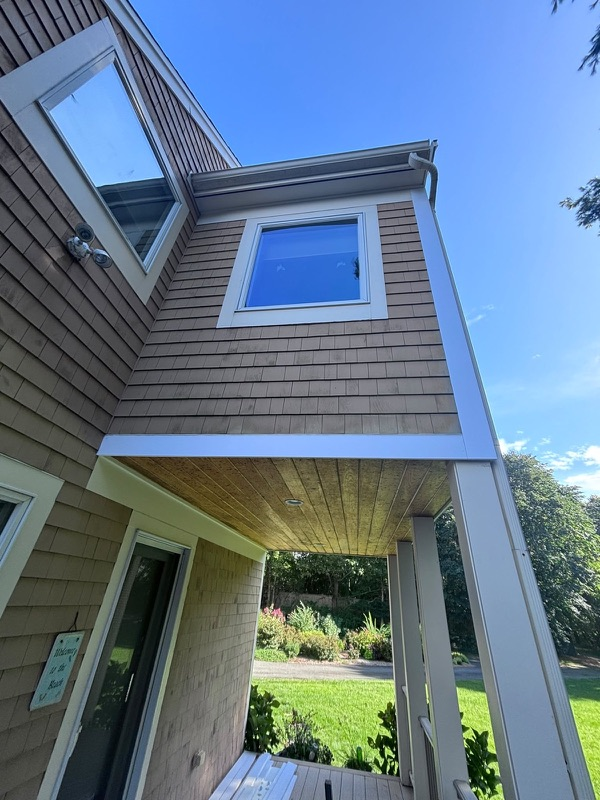
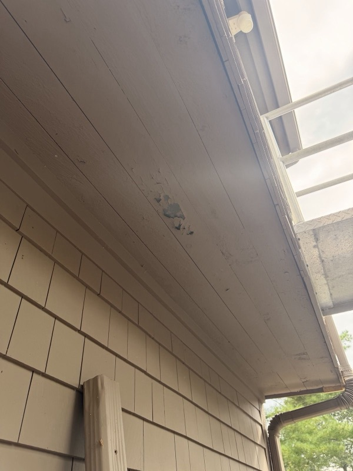
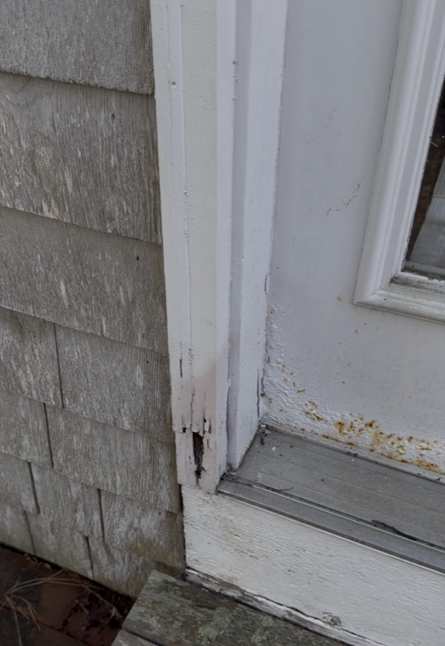
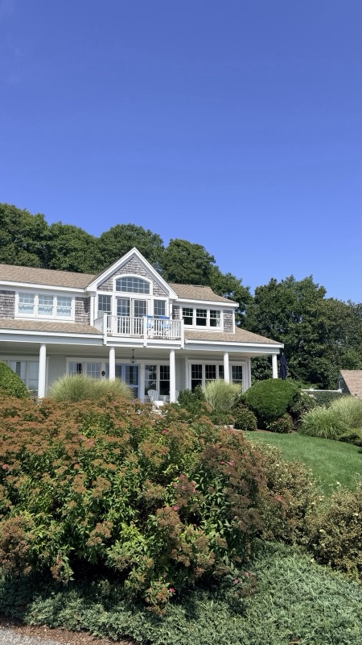
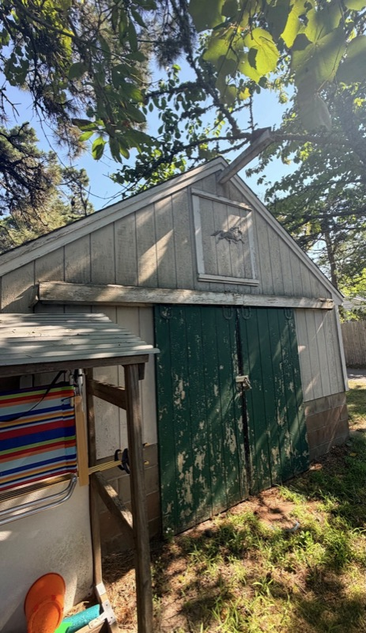
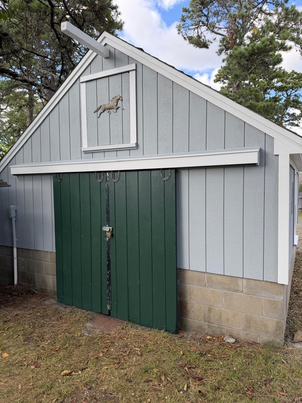
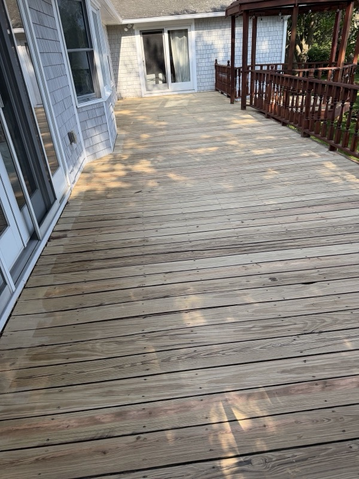
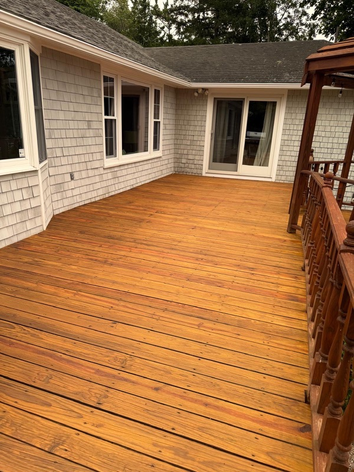

Dicas e perguntas do job
Não é aula. É o que eu faço no job, com foto. Concorde ou discorde: os dois ajudam.
Qual a sua dúvida? Me fala aí.
Travou num job, ficou na dúvida sobre material ou preço? Pergunta. As que mais aparecem viram dica aqui.
Se a gente não souber, a gente traz um especialista para tirar a sua dúvida.
Problemas comuns

Produto certo × superfície certa
Tinta descascando: causa e conserto
Madeira podre: troque antes de pintar
Acabamentos: qual usar onde- Na loja: o que levar da prateleira
Toque numa carta para ir direto ao assunto.
O que você encontra aqui
Cada vídeo, um problema do pintor resolvido.
Produto × Superfície
Qual primer, tinta e acabamento em cada superfície: madeira nova, clapboard, PVC, metal, teto, piso.
PCP-01 · Harbor BlueDicas de aplicação
Técnica, rendimento por galão, secagem. O que evita retrabalho e cliente reclamando.
PCP-02 · Roller OrangeNa loja
Dentro da loja de tinta: comparação na prateleira, lançamentos e conversa com quem vende.
PCP-03 · Lamplight GoldReview de produtos
Vale o preço? Quando usar? Teste honesto, no job de verdade.
PCP-04 · Ceiling MistEntrevistas
Pintores veteranos, representantes de marca e donos de loja. Os macetes que não estão no rótulo.
PCP-05 · Deep PrimerNegócio do pintor
Orçamento, cliente e produtividade. Pintar bem é metade; o resto é gestão.
PCP-06 · Sold Sienna
Dica de colega
Foto do job e o que eu faço naquela situação. Do jeito que se fala na obra.
Pode discordar
Cada pintor tem o seu jeito. Se você faz diferente e dá certo, manda.
Vitrine pra você
Publique o seu projeto no Mural e mostre a sua empresa. De graça.
Dicas em foto
As situações que mais aparecem no dia a dia. Toque na foto pra ver grande.
- Trim podre3 fotos
- Troca de madeira2 fotos, 1 a escolher
- Casa pintada3 fotos
- Erros comuns3 fotos
- Projetos de pintores2 fotos, 1 a escolher
- Antes e depois2 jobs
Trim podre
Troca de madeira
Casa pintada
Erros comuns
Projetos de pintores
Antes e depois
Arraste a alça. O resultado aparece. O trabalho de verdade foi o preparo.


AntesDepoisGalpão
Porta descascando e madeira cinza. Se pular a raspagem, a tinta nova solta junto.


AntesDepoisDeck
Lavado e seco antes do stain. Madeira molhada não segura nada. Uma demão bem feita vale mais que duas com pressa.
Madeira podre não se pinta. Se troca.
Tinta é proteção, não conserto. Pintar por cima da podridão esconde o problema por uma estação; depois volta pior, e o retrabalho é seu. Teste, troque, prepare e só então pinte.
1. Teste
Encoste a chave de fenda na madeira. Se afundar mole, é podridão. Nenhuma tinta resolve isso.
2. Troque
Corte a peça podre e instale madeira nova ou trim de PVC (tipo Azek). No trim, o PVC não apodrece.
3. Prepare e pinte
Madeira: sele todos os cortes e faces com primer, topo da peça incluído, e aplique duas demãos. PVC/Azek: não leva primer; só limpo, seco e sem gordura, com tinta 100% acrílica (cor escura, só tinta "vinyl safe").
Fale isso para o cliente, palavra por palavra: "Eu posso pintar isso hoje, mas está podre por baixo. Em um ano falha e o senhor paga duas vezes. Trocar antes custa menos que fazer o serviço duas vezes."
Fonte do PVC: guia de instalação do trim AZEK (abril de 2025). Confira sempre a ficha atual do fabricante.
O que está na van de verdade
Produtos testados no job. Sem marca empurrada.
- Pincéis e rolosOs que não deixam marca de emenda.
- PreparaçãoRaspadores, lixadeiras e lavadoras que cortam o tempo de preparo pela metade.
- Fita e proteçãoLinha limpa em trim, janela e teto.
- Tintas e primersO que a gente usa em exterior perto do mar e em interior de uso pesado.
Os links entram conforme os episódios saem. Alguns poderão ser links de afiliado: não custam nada a mais para você e ajudam a manter o canal gratuito. Quando for afiliado, vai estar escrito.
Primeiros episódios em produção
Ainda não publicamos nenhum. Estes são os primeiros que estamos gravando.
- Short · 60s
Primer: obrigatório ou dinheiro jogado fora?
Onde o primer é inegociável e onde você está gastando à toa.
- Short · 60s
A tinta certa para clapboard perto do mar
Maresia acaba com tinta errada. A que aguenta, testada no job.
- Short · 60s
Na loja: 3 primers na prateleira
Três preços, três promessas. Qual levar para o job de hoje.
- Short · 45s
Flat, eggshell, satin ou semi-gloss?
O acabamento certo por cômodo e superfície, com a tabela para salvar.
- Short · 60s
30 anos de pintura: 3 erros que ele nunca mais cometeu
Entrevista com um veterano do ofício. O erro número 2 custou caro.
Quer saber quando sair?
Deixe o seu e-mail e a gente avisa.
Quero ser avisado
Mande sua pergunta
Travou num job? Pergunta. As dúvidas que mais aparecem viram dica aqui, com foto.
Perguntas frequentes
É pago?
Não. Ler as dicas, mandar pergunta e aparecer no Mural não custa nada.
Não sou pintor. Serve pra mim?
Serve. O canal nasceu na pintura, mas trim podre, madeira molhada e cliente exigente aparecem pra todo mundo que trabalha com casa.
Preciso falar inglês?
Não. O site está em português, inglês e espanhol. As palavras que você ouve no job, como estimate, trim e crew, ficam em inglês e explicadas.
Vocês respondem toda pergunta?
O Roberto lê todas. As que mais aparecem viram dica aqui no site, com foto.
Por que eu discordaria de uma dica?
Porque cada pintor tem o seu jeito. Se você faz diferente e dá certo, manda. A dica boa pode ser a sua.
Vocês abrem a LLC pra mim?
Não. Empresa, seguro e imposto são com um contador ou profissional habilitado no seu estado. Aqui a conversa é sobre o job.